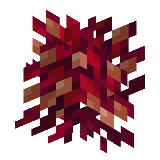
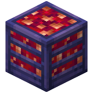

About
Cindersnap berries and frostbite berries are food items obtained from cindersnap berry bushes and frostbite berry bushes respectively. You can also use these berries to plant the bushes.
Cindersnap berry bushes and frostbite berry bushes are quick-growing plants that grow cindersnap berries and frostbite berries respectively. These bushes can be harvested to obtain more berries. Players and most mobs are slowed down and take constant damage while moving through these berry bushes.
Frostbite berry bushes emit blue sparks, while cindersnap berry bushes emit orange sparks.
Growth
Unlike normal bushes, these cannot be grown or multiplied using bone meal.
Natural Generation
Cindersnap berry bushes and frostbite berry bushes can both be found in the warped forest and crimson forest biomes in the Nether dimension.
Placing
Cindersnap berries and frostbite berries can be planted on the following blocks:
Any blocks added to the c:netherracks tag are also supported.
Breaking
Both bushes can be mined instantly with any tool or by hand. A mature cindersnap berry bush or frostbite berry bush yields 2–3 berries. On its third growth stage, the bush yields 1–2 berries. Each level of Fortune can increase the amount of drops by 1.
Harvesting
Berries can be collected from a berry bush by pressing the use control on it, yielding 1–2 appropriate berries in its third growth stage, and 2–3 berries in its final growth stage. After dropping the berries on the ground, the berry bush reverts to its second growth stage.
Usage
Food
To eat cindersnap and frostbite berries, press and hold use while it is selected in the hotbar. Eating one restores 4 hunger (2 drumsticks) and 0.8 saturation.
Crafting Recipes


Craft cindersnap berry juice in a crafting table by placing cindersnap berries in a plus shape around a central glass bottle.


Craft frostbite berry juice in a crafting table by placing frostbite berries in a plus shape around a central glass bottle.


Craft crimson forage mix in a crafting table by placing three cindersnap berries and three of any crimson vegetation in any arrangement.


Craft warped forage mix in a crafting table by placing three frostbite berries and three of any warped vegetation in any arrangement.
Technical
Show Configuration
Cindersnap bushes and berries
Toggles the world generation and availability of cindersnap berries and bushes.
- In-Game Screen Name: Enable Cindersnap Berries
-
Config File Key:
enable_cindersnap_berriestrue/Yes: Enabled (Default)false/No: Disabled and hidden
Frostbite bushes and berries
Toggles the world generation and availability of frostbite berries and bushes.
- In-Game Screen Name: Enable Frostbite Berries
-
Config File Key:
enable_frostbite_berriestrue/Yes: Enabled (Default)false/No: Disabled and hidden
Nether Berries

| Consumption Time | 32 game ticks (1.6 seconds) |
| Renewable | Yes (Berry Bushes) |
| Stackable | Yes (64) |
| Hunger | 2 drumsticks |
| Saturation | 0.8 |
| Always Consumable | No |

| Tool | Any tool |
| Biome | Nether Forests |
| Blast Resistance | 0 |
| Hardness | 0 |
| Luminous |
|
| Transparent | Yes |
| Catches fire from lava | No |
| Can be grown with bone meal | No |

| Renewable | Yes (Crafting) |
| Stackable | Yes (64) |
| Blast resistance | 3 |
| Hardness | 2 |
| Luminous | No |
| Flammable | Yes |
| Catches fire from lava | Yes |
| Note block instrument | Bass |
| Sulfur cube archetype | Fast Flat |